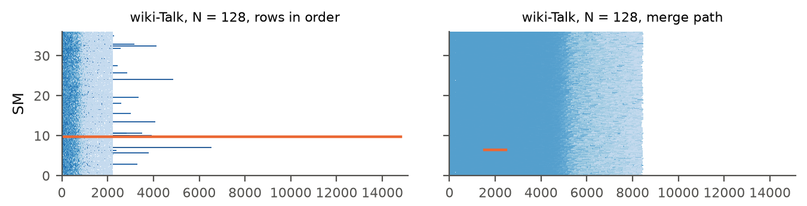

Re-building a 2020 GPU kernel for sparse matrix multiplication, and re-tuning it for a 2025 GPU
Pradyumna Chacham & Dilip Kumar Fall 2026
Reproduce a paperMake it fasterCUDA · OpenMP · NCSU ARC
The problem, from first principles
Multiply a sparse matrix by a dense matrix
Sparse matrix: almost all entries are zero, so we store only the nonzeros. CSR (Compressed Sparse Row) stores each row’s column numbers and values back to back.
SpMV (sparse matrix × vector): y = A·x. This was our kernel in HW1–HW4.
SpMM (sparse matrix × dense matrix): C = A·B, where B has N columns, N = 16 to 512.
Why it matters: one layer of a graph neural network (GNN) is an SpMM. Each node adds up its neighbours’ feature vectors. A is the graph, B holds one feature vector (length N) per node.
Which rows of B we read depends on the graph, so memory access is irregular. That is the whole difficulty.
Key ideaSpMM is like N SpMVs that share the same A. Reading A once for all N columns is where the speed comes from.
What we carried over from HW1–HW3 and the midterm
Four lessons from the homeworks, used again here
HW3 · CUDAOne warp per rowA warp is a group of 32 GPU threads that run the same instruction together. HW3’s vector kernel gave each row one warp.The paper’s starting kernel does the same, with the 32 threads spread across B’s columns.
HW2 · OpenMPBalance nonzeros, not rowsGiving each thread an equal number of nonzeros was 32–41% faster than equal rows on uneven matrices.Our merge-path GPU kernel does this for warps (Finding 2).
HW1–HW3 · RooflineMemory is the limitSpMV does about 0.17 math operations per byte it reads, so it waits on memory, not on arithmetic.SpMM does more work per byte, but is still limited by memory.
Midterm · GEMMKeep reused data closeTiling copied blocks of a matrix into fast cache so each value was read from memory once.The paper’s first trick copies a piece of the sparse row into fast on-chip memory.
One more from HW3How uneven the row lengths are (roadNet-CA vs pkustk14) decided which SpMV kernel won. It decides which SpMM kernel wins too.
The paper we reproduced
GE-SpMM (Huang et al., SC 2020): two tricks on top of CSR
Start: one warp per sparse row; thread j of the warp computes output column j. Then:
Trick 1 · CRCCoalesced Row CachingWithout it, all 32 threads read the same nonzero, one at a time. With it, the warp reads 32 nonzeros in one combined (“coalesced”) read, puts them in shared memory (fast memory on the chip), and every thread reuses them.
Trick 2 · CWMCoarse-grained Warp MergingOne warp computes CF groups of 32 columns instead of one, so the sparse row is read once and used CF times. CF is the coarsening factor; the paper always uses CF = 2.
GPU
RTX 5060 Ti
2025 · 36 SMs · 448 GB/s
Software
CUDA 12.9
on NCSU ARC nodes
Inputs
118 matrices
real graphs + generated ones
Widths
N = 16 to 512
typical GNN feature sizes
Checked
≈78,000 runs
0 wrong answers
Our questionThe paper’s GPUs had 2.75–4 MB of L2 cache (the large cache shared by the whole GPU). Ours has 32 MB. Do the two tricks still help, and on which matrices?
Finding 1
On a 2025 GPU, the paper’s fixed settings no longer win
Baseline to beat: cuSPARSE, NVIDIA’s own sparse library. We time every method it offers and keep the best one. 1.0× means the same speed.
0.95×Paper’s kernel (CF = 2) vs the best cuSPARSE method, N = 512The paper reported 1.37–1.43× on its 2016–2018 GPUs.
1.40× slowerTrick 1 (CRC) vs the paper’s own simple kernelIt reads 25% fewer bytes but runs 62% more instructions. The big cache already catches the repeated reads that CRC was built to remove.
Best CF over all 705 (matrix, N) pairs
CF 1
378
CF 2
317 (paper’s choice)
CF 4
7
CF 8
3
What we didChoose the settings per matrix (CF, warps per block, floats per load, threads per row): 1.81× faster than the paper’s fixed settings.
0.95× and 1.40×: our October run (104 matrices; 17 profiled with Nsight Compute). Other numbers: November run (118 matrices).
Finding 2
Uneven graphs need work split by nonzeros, not by rows
HW2 → GPUIn real graphs a few rows are huge. With one warp per row, the whole kernel waits for the warp with the longest row. In HW2 we fixed this on the CPU by giving each thread an equal number of nonzeros. Merge path (Merrill & Garland, SC 2016) does the same for GPU warps.

Each line is one warp on one SM (streaming multiprocessor, one of the GPU’s 36 cores). Time axis in µs. Orange = the slowest warp. Graph: wiki-Talk, N = 128.
14.8 msOne warp per row85% of the run is a tail with most SMs idle. One row has 100,022 nonzeros.
8.5 msMerge pathNo tail. Rows split across warps are added in a fixed order, so the answer is identical every run.
1.72×Merge path vs best row kernel59 uneven matrices, N = 16 (uneven: spread of row lengths ≥ 2× the mean).
Results
Faster than NVIDIA’s library on almost every matrix
1.58×vs best cuSPARSE, N = 512Faster on 110 of 115 matrices (2 ties, 3 slower).
1.51×vs best cuSPARSE, N = 16Small N: pack 2–4 rows into one warp, plus merge path.
1.14×With settings picked by a simple rulevs best cuSPARSE on 27 matrices the rule never saw. Picking costs 0.2 ms, once per graph.
4.8×GPU vs our best CPU code, N = 51216-core AMD EPYC, OpenMP + AVX-512. Our CPU code is faster than Intel MKL (MKL: 0.77×).
2.06×Training a 2-layer GCNGraph convolutional network, time per epoch, vs PyTorch’s built-in sparse multiply.
6.75×Max instead of sum (GraphSAGE)vs PyTorch’s scatter method, using about 10× less memory.
× = speed ratio, averaged over matrices with the geometric mean (the right average for ratios). Per-matrix plots and confidence intervals are in the report.
Roofline
Why the gains are modest: SpMM is still limited by memory
Each dot is one measured run (Nsight Compute). Dashed line: the most any kernel can do at 448 GB/s.
Arithmetic intensity = math operations done per byte read from memory. SpMV in HW1–HW3: 0.17. Our SpMM: median 1.22.
The GPU can do about 24 trillion operations per second but read only 448 GB/s. A kernel needs about 50 operations per byte before arithmetic becomes the limit. We are far below that, so memory is the limit.
Achieved memory speed: median 238 GB/s, best 423 GB/s = 94% of the maximum.
Most common reason a warp stalls: waiting for a memory load.
Same lesson as HW1–HW3Every speed-up came from reading fewer bytes or keeping more of the GPU busy, never from doing less math.
Wrap-up
Three takeaways
1Running a paper’s code is not reproducing it. Settings that won in 2020 lose on a 2025 GPU; tuning per matrix brings back a 1.58× lead.
2Load balance matters on the GPU, just as in HW2. Splitting work by nonzeros removes the long-row tail.
3SpMM stays limited by memory. Optimize bytes moved and busy SMs, not math.
Not in this talk: see the report and the explainer page8 hypotheses we tested (4 were not supported) · the CPU version (OpenMP + AVX-512 vs Intel MKL) · a model that predicts memory traffic from the matrix alone · half precision, energy, five GPU generations.
Explainer: GE-SpMM Retuned explainer · Slides and figures: github.com/Pradyumna-Chacham/gespmm-talk
Thank you · Questions?
Backup · for questions
The hypotheses we tested
#
Hypothesis
What the data said
H1
Trick 1 (CRC) pays off only for long rows
Not supported: correlation 0.35–0.56 (needed > 0.8)
H2
The best CF falls as row lengths get more uneven
Not supported: CF 1 is best everywhere at N ≥ 64
H3
Uneven rows hurt the GPU more than the CPU
Supported; merge path closes 35–71% of the gap
H4
The GPU’s lead over the CPU grows with N
Supported: 1.9× at N = 16 → 4.8× at N = 512
H5
Node order still matters on a big-cache GPU
Partly: random order 0.88×, other orders ≈ 1.0× (October run)
H6
Merge path beats row split on uneven graphs at every N
Not supported: 1.72× at N = 16, but 0.94× at N = 512
H7
There is an unevenness level where merge path takes over
Yes: around a spread of 4× the mean row length (median)
H8
Grouping rows by length (binning) gets half of merge path’s gain
Not supported: it gets 0.32 of it
“Spread” = coefficient of variation (CoV): standard deviation of row lengths divided by their mean.
Backup · terms
Terms used in this talk
Term
Meaning
CSR
Compressed Sparse Row: stores each row’s nonzeros (column number + value) back to back, plus where each row starts